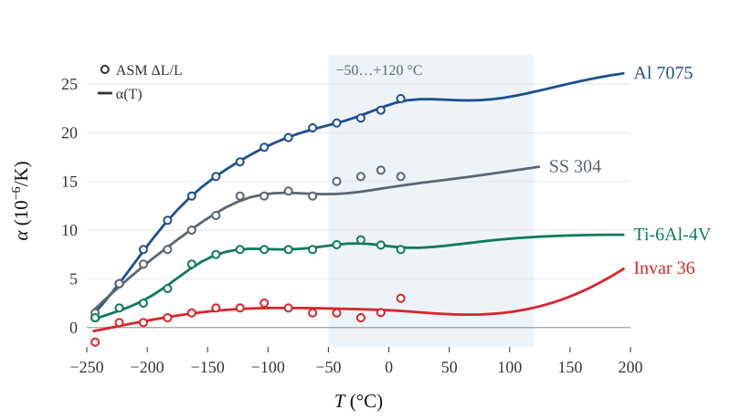
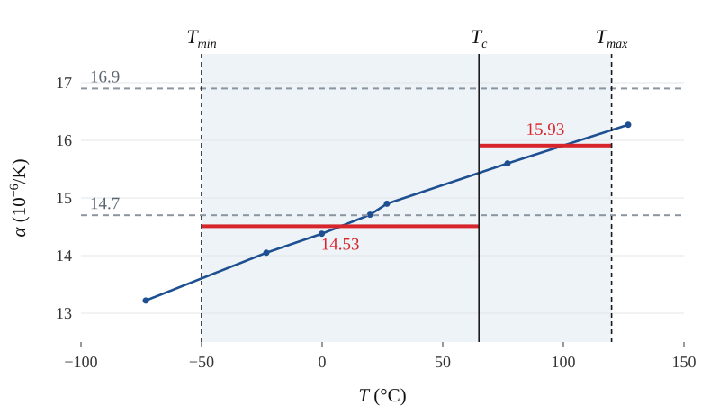

Yuvanın genleşme katsayısı da sabit değil
Önceki yazının devamı
Bir önceki yazıda camın genleşme katsayısının sıcaklıkla değiştiğini ve bunun bağ kalınlığını nasıl etkilediğini anlatmıştım. O yazının sonunda yuvanın ve yapıştırıcının hâlâ tek bir α ile hesaplandığını yazmıştım. v3.0 ile bu sınır kalktı. Ama yuva verisini toplarken daha temel bir soruyla karşılaştım: aynı metal için kaynaklar neden farklı α veriyor?

Paslanmaz 304 için dört farklı α
- Kasunic (Optomechanical Systems Engineering, Tablo 8.1): 14.7 ×10⁻⁶/K, −30 ile 70 °C arasındaki ortalama.
- NIST kriyojenik malzeme veritabanı: 20 °C'de yaklaşık 15.4 (eğri uydurması, ±%5).
- Üretici bülteni: 16.9, 0 ile 100 °C arasındaki ortalama.
- Sık kullanılan veri derleyicileri: 17.3, yine 0 ile 100 °C.
Farkın bir kısmı aralıktan geliyor. Metallerde α sıcaklıkla artar; 0 ile 100 °C arasındaki ortalama, −30 ile 70 °C arasındaki ortalamadan doğal olarak büyüktür. Bir kısmı ise tanımdan: kimi kaynak belirli bir sıcaklıktaki anlık α'yı, kimi bir aralığın ortalamasını verir ve bu çoğu zaman yazılmaz. Geri kalanı da verinin kendisinden.
Hangisinin doğru olduğunu ayırmak için CINDAS'ın (Purdue Üniversitesi) eleştirel değerlendirme raporuna baktım. Bu raporlar literatürdeki ölçümleri toplayıp karşılaştırarak önerilen değerler veriyor. 304 için 20 °C'deki anlık α 14.71; Kasunic'in 14.7'siyle aynı. Yani kitaptaki değer düşük değil, aralığı ve kaynağı belli bir değer.
Tabloları nasıl kurdum?
Tek bir kaynak bir metalin bütün sıcaklık aralığını nadiren kapsıyor. Kriyojenik ölçümler genellikle oda sıcaklığında biter, üretici verileri ise oda sıcaklığından başlayan aralık ortalamalarıdır. Bu yüzden her tablo birkaç kaynaktan kuruluyor:
- 20 °C altında ASM Materials at Low Temperatures'ın uzama tabloları (4–293 K): Ti-6Al-4V, Al 2024 ve 7075, 304L, bakır ve Fe-36Ni (Invar). Ortak aralıkta NIST ve CINDAS ile çoğunlukla %1–5 içinde uyuşuyorlar. Bu tabloların olmadığı metallerde NIST ya da CINDAS kullanılıyor.
- 20 °C üstünde el kitabı ve üretici verileri: alüminyumlar için ASM Handbook, bakır alaşımları için CDA, Ti-6Al-4V için Aerospace Metals, Invar için Matthey ve Rolled Alloys.
- Kaynaklar α düzeyinde değil uzama düzeyinde birleşiyor: sınır sıcaklığında iki kaynağın uzaması eşitleniyor, α da uzama eğrisinin eğimi olarak hesaplanıyor.
- Uzama tabloları yuvarlanmış olduğu için (ASM'de ±5 ppm) eğri noktaların tam içinden geçmiyor; noktaların tam içinden geçen bir eğri yuvarlamayı da izler ve α'da gerçek olmayan dalgalar oluşturur. Metallerin çoğunda eğri, Grüneisen–Debye modeli uydurularak kuruluyor; model veriyi her kaynağın belirsizliği içinde karşılamazsa α'nın pencere içinde azalmamasını şart koşan düzgünleştirme kullanılıyor. Invar'da veri olduğu gibi düzgünleştiriliyor. Ayrıntısı "Genleşme eğrisini fizikle düzgünleştirmek" yazısında.
Kaynakları basitçe uç uca eklemek yanıltıcı olabilir. Ti-6Al-4V için NIST eğrisi 20 °C'de 7.7 civarında bitiyor; bir üretici 0–100 °C için ortalama 9.0 veriyor. İkisini 20 °C'de birleştirince bu ortalama 20–100 °C aralığına sıkışıyor ve α 20 °C'de 7.9'dan 9.3'e sıçrıyor. Metalde böyle bir sıçrama yok. Ayrıca 9.0, oda sıcaklığındaki ölçümlerle de uyuşmuyor; bu yüzden 20 °C üstünde 20–100 °C ortalaması 8.6 olan veriyi seçtim. Bu değer Kasunic'in 8.6'sıyla aynı.
Invar: oda sıcaklığında en düşük
Invar en zor malzemeydi. Kaynaklar birbirinden %30'a kadar ayrılıyor; Invar'ın α'sı üretime ve ısıl işleme göre değiştiği için bu şaşırtıcı değil. Tabloda α −100 °C civarında yaklaşık 2.0, 60 °C civarında 1.3 ile en düşük ve 100 °C'nin üstünde Curie noktasına yaklaştıkça hızla artıyor. −190 °C'nin altında ise uzama neredeyse duruyor; 20–40 K arasında hafifçe negatif bile.
Bir uyarı: üretici veri sayfaları genellikle 20 °C'den belirtilen sıcaklığa kadar olan ortalamayı verir. Aracın α(T) penceresi ise her 10 °C'lik dilimin yerel değerini gösteriyor. Rolled Alloys 20–300 °C için ortalama 5.6 veriyor; tabloda yerel değer 300 °C'ye yaklaşırken 14–15'e çıkıyor ve ikisi aynı uzamayı anlatıyor.
Bağ kalınlığına etkisi
Örnek: N-BK7 lens, Masterbond 2LO, paslanmaz 304 yuva, 6 × Ø2 mm pad, kür 65 °C, çalışma −50 / +120 °C. N-BK7 için araçta α(T) tablosu yok; bu yüzden farkın tamamı yuvadan geliyor. Önerilen bağ kalınlığı:
| Yuva α'sı | Önerilen h |
|---|---|
| α(T) tablosu (CINDAS; uçlarda 14.53 / 15.93) | 0.345 mm |
| 14.7 (Kasunic, −30~70 °C) | 0.330 mm |
| 15.4 (NIST, 20 °C) | 0.368 mm |
| 16.9 (bülten, 0–100 °C) | 0.453 mm |
| 17.3 (derleyici, 0–100 °C) | 0.478 mm |

Kaynak seçimi bağ kalınlığını yaklaşık %45 değiştiriyor. Bu örnekte cam ile yuva arasındaki α farkı küçük, yapıştırıcının α'sı ise büyük; bu durumda yuva α'sındaki küçük bir oynama bağ kalınlığına güçlü biçimde yansıyor. Sıcaklığa bağlı tablo, soğuk uçta biraz daha küçük, sıcak uçta biraz daha büyük α kullanarak iki ucu birlikte dengeliyor.
Araçta ne değişti?
Hesap artık optik, yuva ve yapıştırıcının üçü için de kürden soğuk uca ve sıcak uca ayrı sekant α kullanabiliyor. Bir malzemenin tablosu yoksa o malzeme eskisi gibi tek α ile hesaplanıyor. Bir malzemenin α'sını Girdiler'de elle girerseniz o malzemenin tablosu kullanılmıyor.
- 21 yuva malzemesinde kaynaklı α(T) tablosu var; çoğu −269 °C'ye kadar iniyor.
- Yeni paslanmazlar: 304L, 317, 321, 347, 410 ve 430.
- α(T) tablosu olan her yuva malzemesinde listedeki CTE, tablonun −30~70 °C ortalamasıdır; hesap ise kürden soğuk ve sıcak uca tablodan bulunan sekant α'larla yapılır ve bu iki değer malzeme satırının altında yazar.
- Yapıştırıcı için de α(T) verisi girilebiliyor. Hazır veri yok: incelediğim yapıştırıcı veri sayfalarının hiçbirinde sıcaklığa bağlı CTE verilmiyor.
- α(T) verisi artık .xlsx ya da .csv dosyasından alınabiliyor; dosya tarayıcıda okunuyor, hiçbir yere gönderilmiyor.
- Optik sistemlerde yaygın kullanılan yuva metalleri "Optikte yaygın" etiketiyle işaretli; yuva listesini bu etikete göre süzebiliyorsunuz.
- Yazdırılan rapor sadeleşti: grafik açıklamaları ve geçen kontrollerin ayrıntıları kâğıtta yok, ekranda duruyor.
Sınırlar
316, 317, 321, 347, 410 ve 430 tabloları yalnız −73 ile 127 °C arasını kapsıyor (CINDAS); dışında araç uçtaki α ile devam ediyor ve uyarı veriyor. 304, 303 ve 304L −73 °C altında ASM verisiyle tamamlandı. Invar tablosu belirli bir lotu değil, kaynakların uzlaştığı eğriyi gösteriyor; kritik bir tasarımda kendi malzemenizin ölçümünü girin. Titanyum Grade 2 için sıcaklığa bağlı veri bulamadım; tek α ile kalıyor. Yapıştırıcılarda asıl büyük değişim camsı geçiş sıcaklığının (Tg) üstünde ve bunun için hâlâ üreticiden veri gerekiyor.
Kaynaklar
- K. J. Kasunic, Optomechanical Systems Engineering, Wiley, 2015, Tablo 8.1 ve 10.1.
- P. D. Desai, C. Y. Ho, Thermal Linear Expansion of Nine Selected AISI Stainless Steels, CINDAS Report 51, 1978.
- Y. S. Touloukian, C. Y. Ho (ed.), Thermophysical Properties of Selected Aerospace Materials, Part II, CINDAS.
- Materials at Low Temperatures, American Society for Metals, Ohio (ISBN 0-87170-146-4); 4–293 K uzama tabloları.
- NIST Cryogenic Material Properties (304, 6061-T6, Ti-6Al-4V, Invar, berilyum, bakır).
- ASM Handbook, Cilt 2 (alüminyum alaşımlarının ısıl genleşmesi).
- Aerospace Metals, Titanium Ti-6Al-4V (Grade 5), Annealed veri sayfası; Matthey, FeNi36 Invar veri sayfası; Rolled Alloys, INVAR 36 veri sayfası.